| Here is Angela on one of the many bridges spanning the Seine. Since we were jetlagged we were up at some awful hour in the morning, but at least it was very beautiful. | |
| 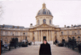 | On our morning stroll through Paris, we stopped for a picture in front of this impressive-looking building. Unfortunately, I forget what it was (drop me a line if you know). |
| 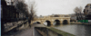 | This is the Pont Neuf, or New Bridge. It is very famous. |
| Here's looking back up the Seine, showing some of the activity on the streets nearby. | |
| 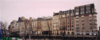 | This picture intrigued me because I thought the buildings were very pretty lined up against the Seine. |
| 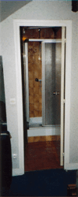 | Wellll.... this is the closet that was our bathroom. I realize having a closet, I mean bathroom of our own could be considered be some to be a luxury, but this is ridiculous! |
| 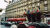 | Now this is classy! After our first hotel turned out to be a dump, we decided to find somewhere nicer. And that we did: the St. Lazare. |
| 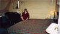 | Very nice accomodations at the St. Lazare. |
| 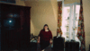 | More nice accomodations at the St. Lazare. |
| There were even robes for us in the bathroom. I could probably fit my huge, American-sized closet at home inside this bathroom (instead of the other way around). | |
| 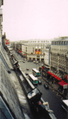 | The view outside our window at the St. Lazare onto the streets below was pretty cool. This is facing to the left. |
| 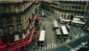 | This is facing straight out. We ended up getting something to eat at that Kanterbrau cafe you can see. |
| 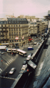 | This is facing to the right. |
| 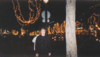 | This is me, and we're on the Champs Elysee at night. The whole street was decorated and all the trees had lights in them. There were lots of people walking around everywhere. |
| 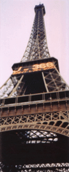 | Of course, the obligatory picture of the Eiffle Tower. I was completely surprised on how big it was! The message lit up is a countdown in days to the year 2000. By the time we finally got up to the second stage (just above the lighted numbers) it was dark, and very cold. There were millions of tourists from all over the world waiting in line. |
| 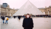 | Here is Angela, and we are at the Louvre. Note the line of people in the background waiting to get in. The glass pyramid was apparantly designed by an American, and is the subject of some ridicule by the French. But I have to ask, who is the greater fool: the fool that designed it, or the fool that actually agreed to put it there? |
| 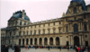 | This is one wing of the Louvre. But I actually took the picture to show how ridiculously long the line was to get in. You can see people in the foreground lined up, but also notice how the line enters the archway on the right, then wraps back to the left inside the building and well off the left of the picture! The crazy thing was this was about 3pm, and the museum closes around 5pm or so. Those people will never get in! |
| 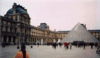 | Here is another picture of the Louvre. It's big. The funny thing is I kept trying to get away from the lady in the orange shirt so she wouldn't be in the picture. Turns out, she was waiting for me to hurry up and finish so she could ask me to take a picture of her and her husband. |
| 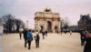 | This is a mini-Arch De Triomphe right by the Louvre. Since we won't be seeing the Louvre on this trip, we decided to take a stroll on the greenway that leads from the Louvre to the real Arch De Triomphe. |
| 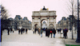 | So as we're walking away, here's one final look back at the Louvre through the mini-Arch De Triomphe. |
| 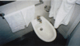 | This was at our third hotel in Paris, The Concord. I felt like Crocodile Dundee, seeing one of these for the first time. |
| An unnecessary zoom of us in one of our hotel rooms. | |
| 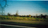 | Here is a picture taken while driving out to our friend's home town in northern France. The countryside was beautiful, with lots of castles everywhere. |
| 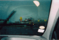 | I hate to admit it, but after a couple of days in France I was dying for some American food (and American-sized beverage). Now, I hardly ever eat McDonald's in America, but finding it then and there was a godsend. |
| 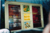 |
I had to take this picture to point out that indeed, in Europe they
call the Quarter Pounder the "Royale with Cheese", as stated in Pulp
Fiction (since they don't use pounds, they use kilograms). Too bad you
can't really see it in the scan (seven items down on the left, you
can almost make out "Royal"), but it's there.
Another funny thing was they called the Supersize option Maxi Best-Of. That's hilarious! What kind of pseudo-English phrase is that? I didn't know what to say, "Je voudrais un Big Mac, Maxi Best-Of??". They must think the same thing when they hear pseudo-French phrases like "Le Car", and such. |
| 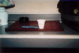 | I took this picture to demonstrate the difference in size perceptions of "a cup of coffee". The small object to the left is a standard-sized pen, placed there to provide scale. Seriously, I left France dehydrated because everything to drink was very small and very expensive (forget free refills, too). |
| 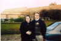 | Angela and I paused for this Kodak moment before entering our friends' wedding reception. |
| 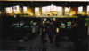 | We are leaving France and at the Charles DeGaulle airport. This picture doesn't do it justice, but if you look hard enough you can see the millions of people being herded through those metal detectors. Everyone was rude and very pushy--mind you, most of them did not appear to be French, but maybe other tourists. I felt like an animal--it was awful. |
{kind=link}
{kind=link}
{kind=link}
{kind=link}
{kind=link}
{kind=link}
{kind=link}
{kind=link}
{kind=link}
{kind=link}
{kind=link}
{kind=link}
{kind=link}
{kind=link}
{kind=link}
{kind=link}
{kind=link}
{kind=link}
{kind=link}
{kind=link}
{kind=link}
{kind=link}
{kind=link}
{kind=link}
{kind=link}
{kind=link}
{kind=link}
{kind=link}